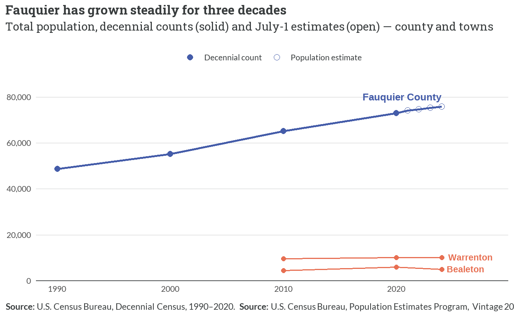
2 Demographic Shifts & Socioeconomic Factors
2.1 Population growth
- Fauquier’s population climbed from 48,741 in 1990 to about 75,900 in 2024 — roughly +56%, adding some 27,000 residents over 34 years.
- Growth has been steady rather than explosive: the county gained about 600–1,000 residents a year across the 2020–2024 estimates.
- Warrenton grew to ~10,200 and Bealeton to ~5,000 by 2024; the two places together hold about a fifth of the county’s residents, but most growth has occurred in the unincorporated county.
NoteCaveat: mixed sources and universes
The county line splices decennial 100% counts (April 1: 1990, 2000, 2010, 2020) with Population Estimates Program figures (July 1: 2021–2024); the 2024 town points are ACS 5-year estimates. These are different universes and reference dates — small level differences between series are expected, not real change. Bealeton has no 2000 decennial place record and is not published in the PEP, so its line starts in 2010. Documented in Appendix A.
2.2 Components of change
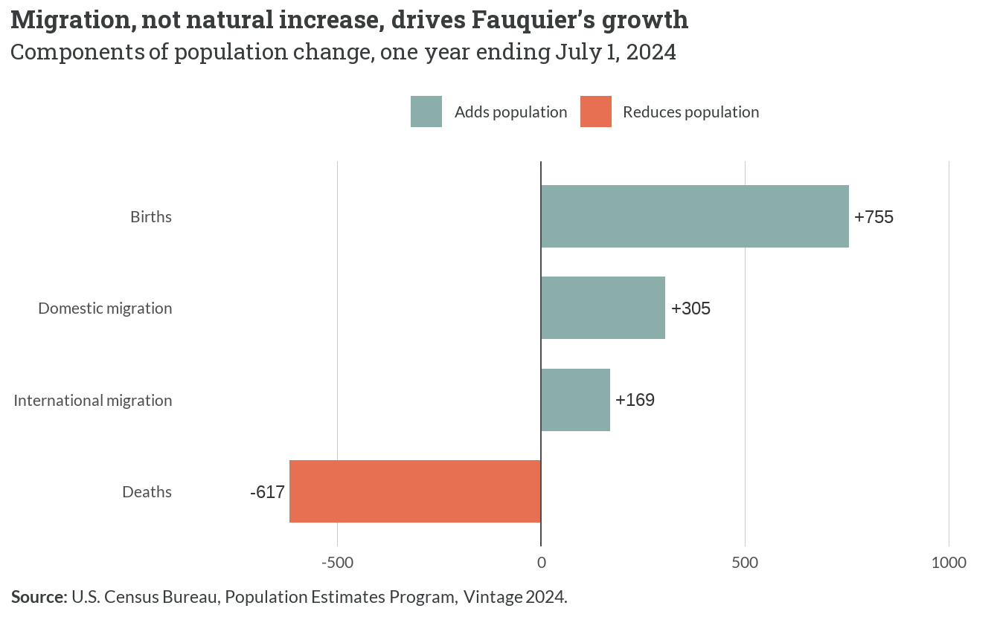
- Net migration (+474) far outweighs natural change (+138) as the engine of growth — the county grows chiefly because more people move in than are born there.
- Natural increase is thin and shrinking: 755 births barely exceeded 617 deaths, consistent with an aging population.
- Migration is overwhelmingly domestic (+305) with a smaller international component (+169) — people relocating from elsewhere in the U.S., largely the D.C. metro.
2.3 Age structure
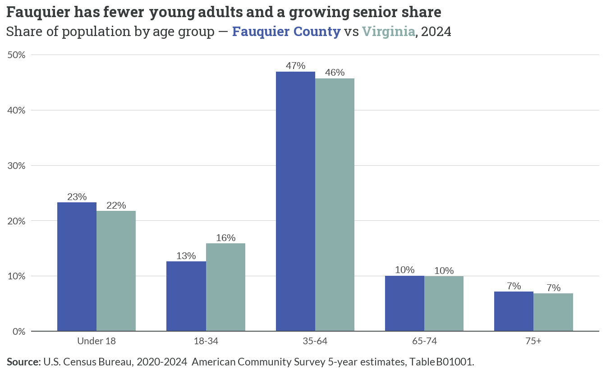
- Fauquier has a notably thin young-adult band: just 13% of residents are 18–34, versus 16% statewide — young adults leave (or never arrive) for lack of entry-level housing and jobs.
- The county skews toward established working age: 35–64-year-olds are its largest group, feeding demand for family-sized housing.
- Seniors are a modestly larger and growing share: 17% are 65+, edging above Virginia’s 17% and rising as the 35–64 cohort ages in place.
NoteTown spotlight — two very different age profiles
The towns diverge sharply. Warrenton is the county’s oldest community — about 18% are 65+ (High reliability) — while Bealeton is markedly younger, with roughly 7–8% seniors and a large under-18 share, reflecting its role as a family-oriented growth node. Source: ACS 2020–2024, Table B01001.
2.4 Households
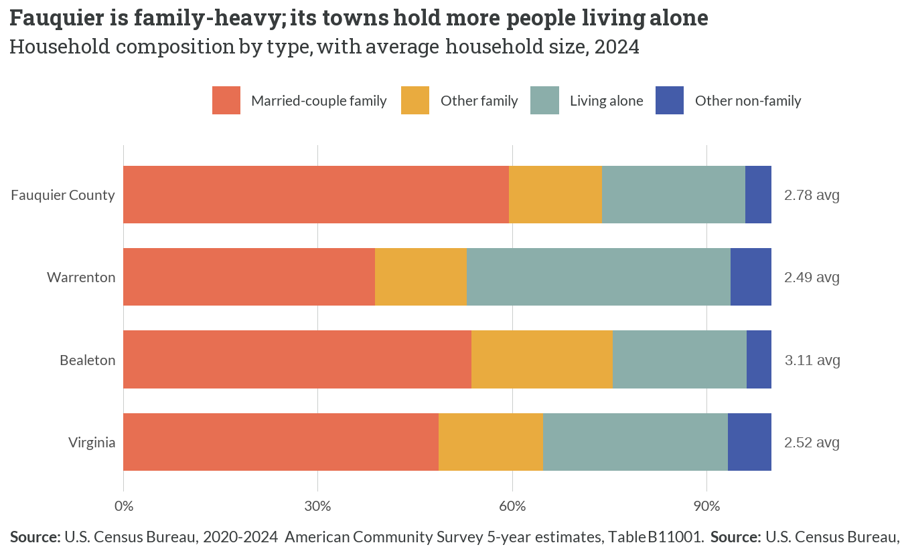
- Married-couple families are 60% of Fauquier’s households — well above Virginia’s 49% — and average household size is 2.78, larger than the state’s 2.52.
- Warrenton looks structurally different: people living alone are its single largest household type (41%), and its average household is just 2.49 — the profile of a small-town rental and senior center.
- Bealeton runs the other way — family-heavy (54% married-couple) with the largest average household (3.11), pointing to demand for larger, family-sized homes.
2.5 Household income
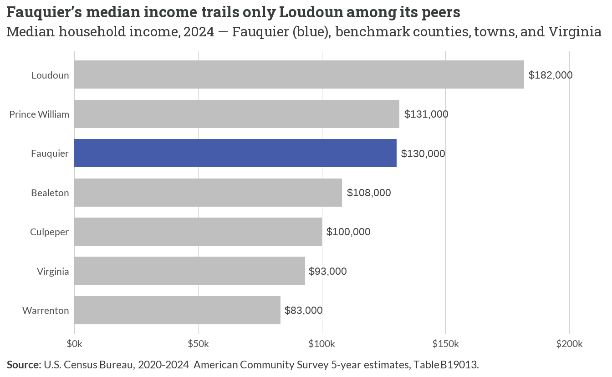
- At $130,189, Fauquier’s median household income is the third-highest of its peer set — essentially tied with Prince William and far below fast-growing Loudoun ($181,765).
- The towns sit well below the county: Warrenton’s median ($83,331) is the lowest in the comparison and below the statewide $93,170, while Bealeton ($108,224) lands between the two.
- High county-wide income coexists with a lower-income town core — a spatial income gap that shapes where affordability pressure concentrates.
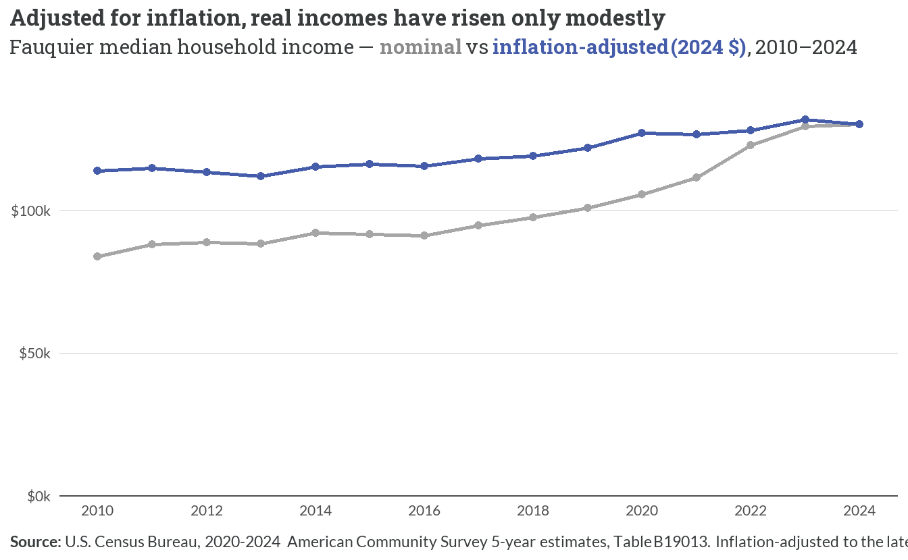
- Nominal median income rose 55% over 2010–2024 ($83,877 → $130,189), but most of that reflects inflation.
- In constant 2024 dollars, real income grew only about 15% — real buying power has crept up, not surged, even as home prices climbed far faster (see Chapter 3).
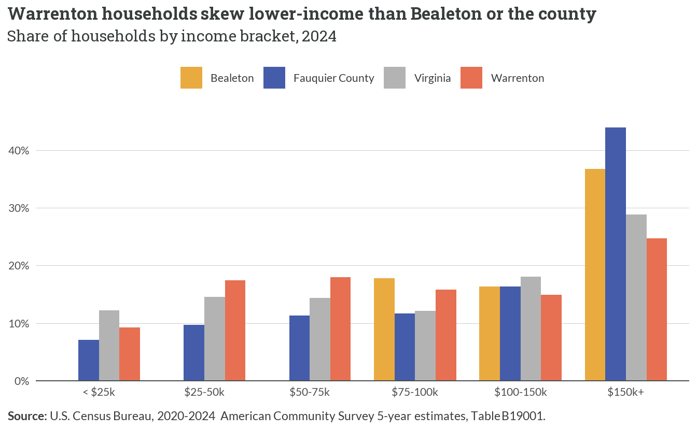
- Warrenton is the lower-income town: about 27% of its households earn under $50,000 versus 17% county-wide, and it has the smallest share in the top ($150k+) bracket.
- Bealeton mirrors the county more closely, concentrated in the upper-middle and $150k+ brackets — consistent with its higher median income.
- Fauquier as a whole is high-income: 44% of households earn $150,000 or more — nearly double Virginia’s share.
- Reliability: Bealeton’s three lowest income brackets carry coefficients of variation above 30% and are suppressed here; the shown Warrenton and Bealeton cells are Medium-to-High reliability.
NotePoverty — county low, town contrast
Fauquier’s poverty rate is 6.8% (about 5,000 people), below Virginia’s 9.9%. The town rates are less certain and are best read as counts: roughly 950 people in poverty in Warrenton and 80 in Bealeton, with margins too wide to publish reliable place-level rates (both CV > 30%). The takeaway is directional — poverty is low county-wide and modestly concentrated in Warrenton. Source: ACS 2020–2024, Table S1701 (S1701_C01_001 universe, S1701_C02_001 count, S1701_C03_001 rate).
2.6 Employment
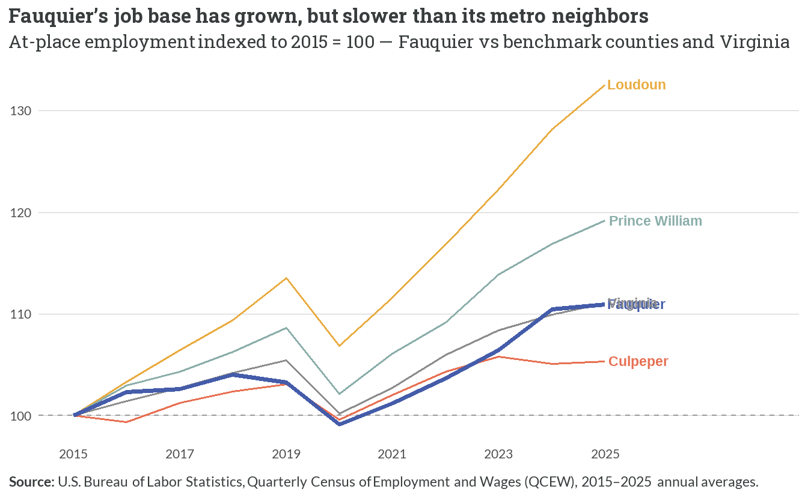
- Fauquier’s at-place employment grew from 21,549 jobs in 2015 to 23,910 in 2025 (~+11%) — real growth, but roughly matching the statewide pace and well behind Loudoun (~+33%) and Prince William (~+19%).
- The county is a modest job center relative to its neighbors: it adds workers steadily but has not captured the metro’s fastest employment expansion.
- Slower job growth reinforces the commute-out pattern — many residents work in higher-growth counties to the east (see Figure 2.10).
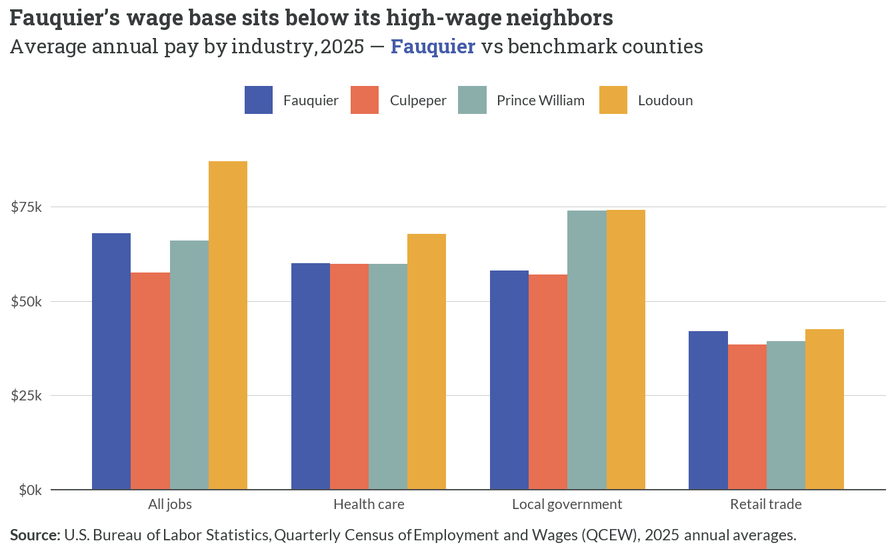
- Fauquier’s all-jobs average pay was about $68,000 in 2025 — mid-pack among its peers, above Culpeper (~$57,600) and Prince William (~$66,000) but far below Loudoun (~$87,100).
- Its largest employment sectors pay modestly: health care averaged ~$60,100 and retail trade just ~$41,900 — the lowest-paying major sector in every county.
- Wage growth has kept pace with neighbors (all four counties saw all-jobs pay rise ~42–48% since 2015); the gap is one of level, not trajectory — Fauquier simply has fewer of the high-wage jobs concentrated to its east.
NoteA note on the wage figures
FHFH-computed 2025 QCEW averages run modestly above the GP study’s earlier $64,272 all-jobs figure (2023 vintage) — the difference is real wage growth between vintages, not a discrepancy. Small county-by-sector cells that BLS suppresses for disclosure are excluded, so only complete series (all jobs, health care, local government, retail trade) are shown.
2.7 Commuting
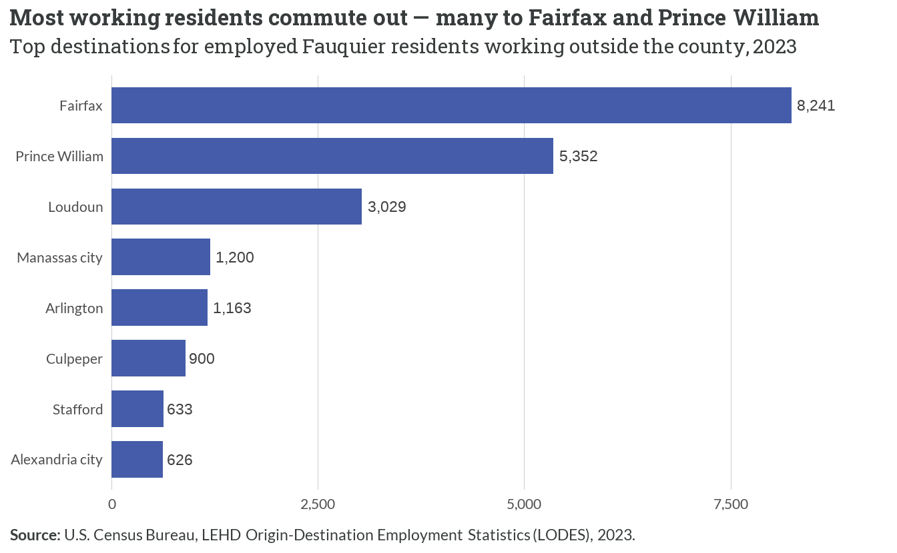
- Only 35.4% of the jobs located in Fauquier are held by county residents — the majority of working residents leave the county each day.
- The largest outbound flows run east into the D.C. job market: ~8,200 to Fairfax, ~5,400 to Prince William, ~3,000 to Loudoun.
- Inbound commuting is the mirror image but smaller — the top in-commuter origins are Culpeper (~2,400), Prince William (~2,300), and Fairfax (~1,300) — filling local jobs Fauquier residents don’t.
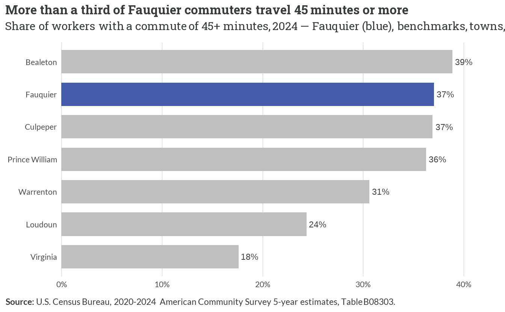
- 37% of Fauquier’s workers commute 45 minutes or more — more than double Virginia’s 18% — a direct consequence of the out-commuting pattern in Figure 2.10.
- Long commutes are a regional exurban trait: Culpeper (37%) and Prince William (36%) look similar, while inner-suburb Loudoun (24%) is lower.
- Within the county, Bealeton commuters travel farthest (39%) and Warrenton residents least (31%), reflecting Warrenton’s greater share of local, in-town jobs.
2.8 What the interviews said vs. what the data shows
ImportantInterview validation
- “Fauquier is a bedroom community — people live here and work elsewhere.” Confirmed. Only 35.4% of local jobs are held by residents, ~8,200 residents commute to Fairfax alone, and 37% of workers travel 45+ minutes (Figure 2.10, Figure 2.11).
- “Higher-paying employers have been pushed out; what’s left pays less.” Partly confirmed, with nuance. Fauquier’s wage base sits below high-wage Loudoun and its largest sectors (health care, retail) pay modestly — but wage growth has matched neighbors, so the issue is the mix of jobs, not falling pay (Figure 2.9).
- Town contrast (required spotlight): Warrenton and Bealeton are demographically opposite — Warrenton older, more single-person and renter households, and lower-income; Bealeton younger, family-heavy, and higher-income (Figure 2.4, Figure 2.7). Affordability pressure and the demographic story both play out differently in the two places.